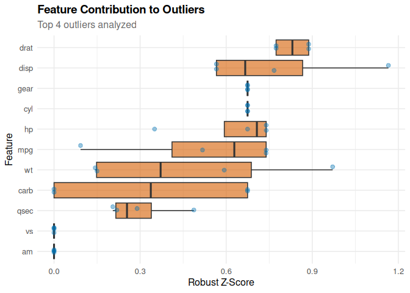

Automatic Outlier Detection Using Isolation Forests
Overview
outlieR provides a simple, powerful API for automatic outlier detection in tabular data. The package uses Isolation Forests (via isotree) with automatic hyperparameter tuning and delivers detailed feature-level diagnostics.
Main Features
✨ Simple API - One function for most use cases 🎯 Automatic Tuning - Grid Search, Random Search, or Bayesian Optimization 📊 Detailed Diagnostics - Feature-level outlier analysis 📈 Comprehensive Visualizations - Score plots, feature importance, PCA projection 🔧 Flexible - Supports numeric and categorical variables
Installation
# Install from GitHub (development version)
# install.packages("remotes")
remotes::install_github("fabiandistler/outlieR")
# Install from CRAN (once available)
# install.packages("outlieR")Quick Start
library(outlieR)
# Basic usage: Automatic outlier detection
result <- detect_outliers(mtcars)
#> ℹ Preprocessing data...
#> ℹ Tuning hyperparameters using grid search...
#> ℹ Testing 675 parameter combinations...
#> ✔ Best parameters found:
#> • ndim: 2
#> • ntrees: 300
#> • prob_pick_avg_gain: 0
#> • prob_pick_pooled_gain: 0
#> • ntry: 1
#> • sample_size: 32
#> ℹ Training isolation forest model...
#> ℹ Computing anomaly scores...
#> ✔ Detected 4 outliers (12.5% of data)
#> ✔ Outlier detection complete!
# Display results
print(result)
#>
#> === Outlier Detection Results ===
#>
#> Model Configuration:
#> - Algorithm: Isolation Forest (isotree)
#> - Number of trees: 300
#> - Sample size: 32
#> - Max depth: auto
#>
#> Detection Summary:
#> - Total observations: 32
#> - Outliers detected: 4 ( 12.5 %)
#> - Anomaly score threshold: 7.6925
#>
#> Performance Metrics:
#> - mean_score : 6.5543
#> - median_score : 6.9225
#> - sd_score : 1.0995
#> - min_score : 4.039
#> - max_score : 7.9759
#> - mean_outlier_score : 7.8597
#> - mean_normal_score : 6.3678
#> - cohens_d : 2.0018
#> - outlier_separation : 1.3569
#> - detection_rate : 0.125
#> - expected_contamination : 0.1
#> - actual_contamination : 0.125
#>
#> Use plot() to visualize results
#> Use get_outlier_summary() to see detailed outlier information
summary(result)
#>
#> === Outlier Detection Results ===
#>
#> Model Configuration:
#> - Algorithm: Isolation Forest (isotree)
#> - Number of trees: 300
#> - Sample size: 32
#> - Max depth: auto
#>
#> Detection Summary:
#> - Total observations: 32
#> - Outliers detected: 4 ( 12.5 %)
#> - Anomaly score threshold: 7.6925
#>
#> Performance Metrics:
#> - mean_score : 6.5543
#> - median_score : 6.9225
#> - sd_score : 1.0995
#> - min_score : 4.039
#> - max_score : 7.9759
#> - mean_outlier_score : 7.8597
#> - mean_normal_score : 6.3678
#> - cohens_d : 2.0018
#> - outlier_separation : 1.3569
#> - detection_rate : 0.125
#> - expected_contamination : 0.1
#> - actual_contamination : 0.125
#>
#> Use plot() to visualize results
#> Use get_outlier_summary() to see detailed outlier information
#>
#> Top 10 Outliers:
#> row_id anomaly_score n_outlier_features
#> <int> <num> <int>
#> 1: 23 7.975920 0
#> 2: 12 7.886702 0
#> 3: 14 7.871458 0
#> 4: 5 7.704758 0
# Extract outlier details
outlier_summary <- get_outlier_summary(result)
utils::head(outlier_summary)
#> row_id anomaly_score is_outlier feat_score_mpg feat_score_cyl
#> <int> <num> <lgcl> <num> <num>
#> 1: 23 7.975920 TRUE 0.73916796 0.6744908
#> 2: 12 7.886702 TRUE 0.51741757 0.6744908
#> 3: 14 7.871458 TRUE 0.73916796 0.6744908
#> 4: 5 7.704758 TRUE 0.09239599 0.6744908
#> feat_score_disp feat_score_hp feat_score_drat feat_score_wt feat_score_qsec
#> <num> <num> <num> <num> <num>
#> 1: 0.7666771 0.3502164 0.7738894 0.1433700 0.2895719
#> 2: 0.5659316 0.7393456 0.8874878 0.9710060 0.2189446
#> 3: 0.5659316 0.7393456 0.8874878 0.5930305 0.2048192
#> 4: 1.1653207 0.6744908 0.7738894 0.1498868 0.4873284
#> feat_score_vs feat_score_am feat_score_gear feat_score_carb
#> <num> <num> <num> <num>
#> 1: 0 0 0.6744908 0.0000000
#> 2: 0 0 0.6744908 0.6744908
#> 3: 0 0 0.6744908 0.6744908
#> 4: 0 0 0.6744908 0.0000000
#> n_outlier_features top_outlier_features mpg cyl disp hp drat wt
#> <int> <char> <num> <num> <num> <num> <num> <num>
#> 1: 0 drat, disp, mpg 15.2 8 304.0 150 3.15 3.435
#> 2: 0 wt, drat, hp 16.4 8 275.8 180 3.07 4.070
#> 3: 0 drat, hp, mpg 15.2 8 275.8 180 3.07 3.780
#> 4: 0 disp, drat, cyl 18.7 8 360.0 175 3.15 3.440
#> qsec vs am gear carb
#> <num> <num> <num> <num> <num>
#> 1: 17.30 0 0 3 2
#> 2: 17.40 0 0 3 3
#> 3: 18.00 0 0 3 3
#> 4: 17.02 0 0 3 2
# Create visualizations
plot(result, type = "score") # Score distribution
plot(result, type = "features") # Feature importance
plot(result, type = "pca") # PCA projection
Detailed Examples
1. Analyze specific columns
# Use only selected variables
result <- detect_outliers(
data = iris,
target_cols = c("Sepal.Length", "Sepal.Width", "Petal.Length"),
contamination = 0.05 # Expect 5% outliers
)2. Without automatic tuning
# Manually specify parameters for more control
result <- detect_outliers(
data = mtcars,
tune = FALSE,
n_trees = 200,
max_depth = 12,
sample_size = 512
)3. Different tuning methods
# Grid Search (default, systematic but slower)
result_grid <- detect_outliers(mtcars, tune_method = "grid")
# Random Search (faster, good results)
result_random <- detect_outliers(mtcars, tune_method = "random")
# Bayesian Optimization (experimental)
result_bayes <- detect_outliers(mtcars, tune_method = "bayesian")4. With categorical variables
# Automatic one-hot encoding of factors
set.seed(42)
data <- data.frame(
value1 = rnorm(100),
value2 = rnorm(100),
category = sample(c("A", "B", "C"), 100, replace = TRUE)
)
result <- detect_outliers(data)5. Detailed outlier analysis
result <- detect_outliers(mtcars)
# Which features are suspicious in row 31?
detailed <- get_outlier_summary(result, detailed = TRUE)
detailed[row_id == 31]Performance
# Benchmark on different data sizes
library(bench)
# Small dataset (1000 rows)
small_data <- data.frame(matrix(rnorm(1000 * 10), ncol = 10))
mark(detect_outliers(small_data, tune = FALSE))
# ~500ms
# Medium dataset (10000 rows)
medium_data <- data.frame(matrix(rnorm(10000 * 10), ncol = 10))
mark(detect_outliers(medium_data, tune = FALSE))
# ~2s
# With tuning (slower but better results)
mark(detect_outliers(medium_data, tune = TRUE, tune_method = "random"))
# ~20s (parallel on 4 cores)Advanced Usage
Custom Threshold
result <- detect_outliers(mtcars, contamination = 0.05)
# Use a custom threshold
custom_threshold <- quantile(result$scores, 0.99)
custom_outliers <- result$scores > custom_threshold
# Generate new details
result$outliers <- custom_outliers
result$threshold <- custom_thresholdTroubleshooting
Too many/few outliers
# Adjust contamination parameter
result <- detect_outliers(data, contamination = 0.05) # Fewer outliers
result <- detect_outliers(data, contamination = 0.15) # More outliersPoor separation
# Use more trees
result <- detect_outliers(data, n_trees = 300)
# Enable tuning for better parameters
result <- detect_outliers(data, tune = TRUE, tune_method = "random")Memory issues with large data
# Disable parallel processing
result <- detect_outliers(large_data, parallel = FALSE)
# Fewer trees
result <- detect_outliers(large_data, n_trees = 50, tune = FALSE)Contributing
Contributions are welcome! Please:
- Fork the repository
- Create a feature branch (
git checkout -b feature/AmazingFeature) - Commit your changes (
git commit -m 'Add some AmazingFeature') - Push to the branch (
git push origin feature/AmazingFeature) - Open a pull request
License
MIT License – see LICENSE file for details.